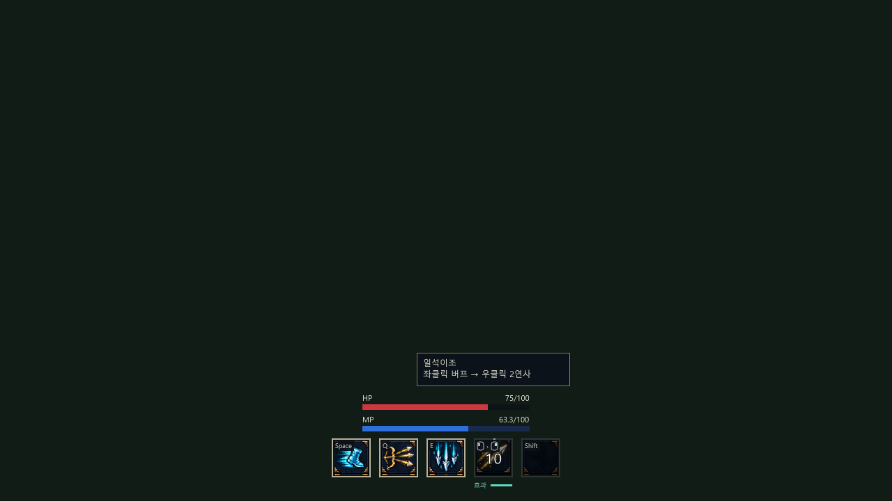
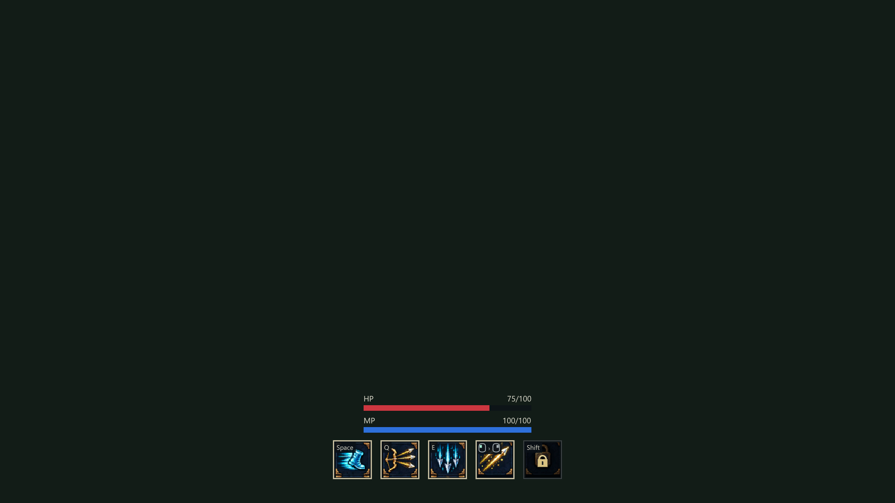
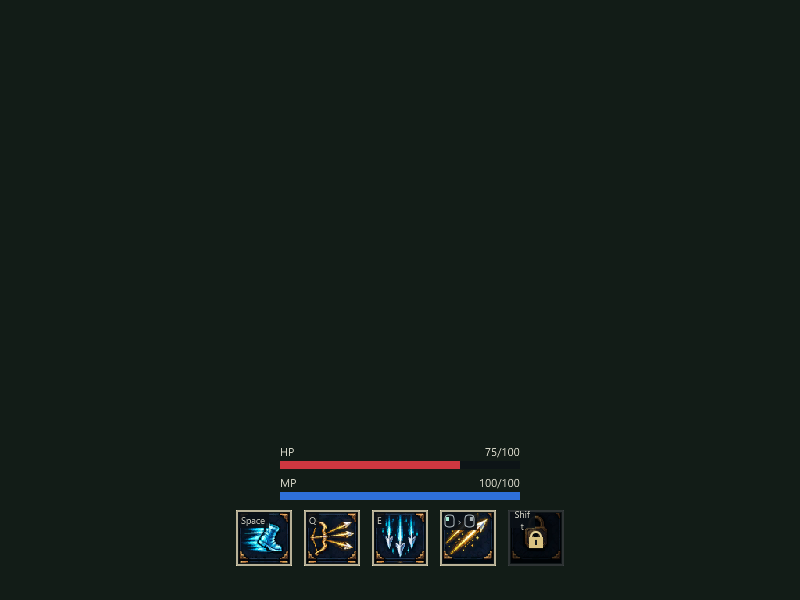
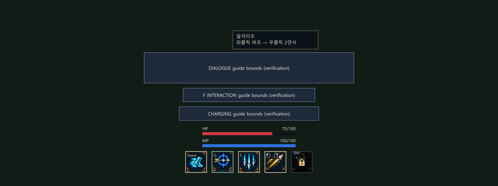

실제 Unity UI를 별도 검증 배경에 렌더한 화면입니다. 전체 화면을 클릭하면 원본 크기로 열립니다.
아이콘 기준 56×56px·간격 12px, 실제 그림 영역 약 89%. HP·MP는 기준 240×8px 유지. 이 1920×1080 화면의 배율은 1.5이며 아이콘은 실제 84px입니다. MP는 즉시 초당 2 회복합니다.
중앙 숫자는 재사용 쿨타임입니다. 아이콘 아래 효과·청록색 막대는 실제 효과가 지속되는 동안만 나타납니다.



아래 영문 상자는 실제 게임 문구가 아니라, 게임이 사용하는 동일한 안내 좌표에 그린 검증용 영역입니다. HUD와 툴팁을 포함한 겹침 검사용 화면입니다.
